もっと換気
1.給気と排気
| 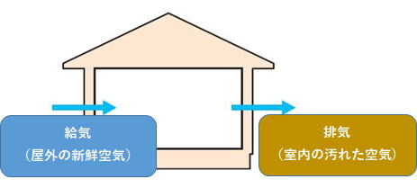 |
2.換気と熱の関係
|
この一連の流れを「換気」と表現しています。換気は、「屋外の新鮮な空気を居室に取り込み、居室の汚れた空気を屋外に排出する」仕事の事を言っています。 この「換気」を行っている過程で、「屋外の新鮮な空気」が、居室に入る状態の時に、「換気と熱の関係」が、居室の冷暖房を行っている「エアコン」に対して、特に大きくかかわってきます。 |
| ①熱負荷 | |
| 「熱負荷」をここでは簡単に、「余計な熱」と、捉えて頂いておきましょう。 次の様な熱負荷があります。 外気負荷： 換気のために外気を室内に供給する際に、外気の温湿度と室内の温湿度に等しくするために要する熱量（熱の量） 平たく言えば、「換気の際に生じる熱負荷」を外気負荷と簡単に考えて頂ければ良いでしょう。 侵入熱（輻射熱等）：外壁や窓ガラスを通過して流入する熱 人体負荷：在室者の発熱 照明負荷：照明器具による熱 機器発熱：様々な機械から生じる熱 すきま風負荷：扉や窓の開閉によって流入する空気の熱 この様な熱をまとめて、「熱負荷」と呼んでいます。 |
|
| 参考に、熱負荷の一例として、マンガ的なグラフで分類すると、こんな感じで分類されます。
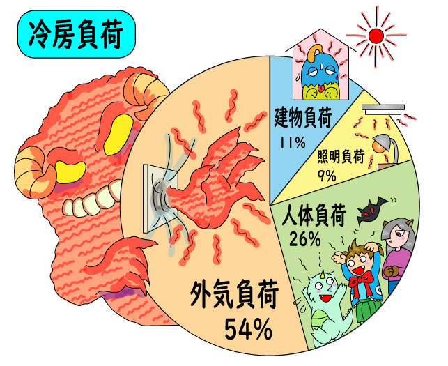
|
| ②換気による外気負荷 |
| マンガの円グラフでもお判りの様に、「外気負荷」が熱負荷としてもっとも影響が大きく、この外気負荷が換気の作用によるものです。 だからと言って、換気は法律により定められているので、止めるわけには行きません。 そこで、換気を止めないで外気負荷を抑える方法が、色々と考えられ、全熱交換機（ロスナイ）や熱交換ユニット（デシカ）等がその代表機器の商品名として、市場に出ています。 |
3.効率の良い換気
| ①効率の良い換気 | ||
「効率の良い換気」を説明すると、「室内環境に応じて、フィルターを介し処理された外気を導入し、適切に排出される機能が備わった換気」の事です。
とはいっても、普段の日常生活の中で、換気について興味を持って観察する様な暇などは、全くありません。 居室の温度が上がったり下がったりすれば、エアコンの温度設定を変えると言う事はあっても、空気が汚れたからと言って、換気扇を「強」に変えたり、窓を開けたりと言った行動を取る人は、稀にはいるかも知れませんが、多分ほとんどの人は、換気は出来ているものと、思い込んでいるだけの事です。 そう言った意味でも、人の手を介さず「換気設備」そのものの機能が、効率良く適切に稼動しなければなりません。 |
||
| ②効率の悪い換気 | ||||||||||||||
効率の悪い換気を簡単に表して見ましたが、みなさんも多分こんな光景を見掛けた事はありませんか？
|
||||||||||||||
| 1）第三種換気 | |
| 最も一般的に採用されている換気の種類は、下図の様な「第三種換気」です。
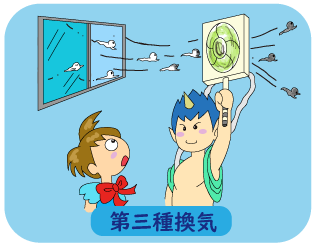
|
|
| 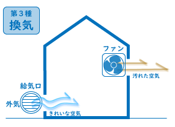 | |
| 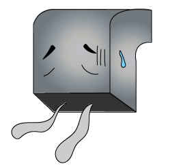 | |
| 「第三種換気」は、負圧（マイナス圧力）が必要な用途、例えば危険物の貯蔵所等で、給気フィルターを介さず排気に重点を置くと言った場所では、問題無く機能が発揮されます。 | ||
| 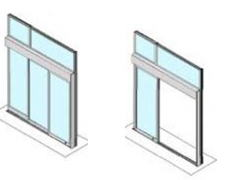 | しかし、営業目的とした居室では、負圧（マイナス圧）作用の影響により、扉が閉まっている時は給気口から屋外空気が入りますが、扉を開けると扉の開口が給気口よりも抵抗が少なくなり、扉側から屋外の新鮮空気が一気に入り、扉付近で寒暖差の空気影響が大きく生じ、違和感やエアコンの動作にも影響を与えます。 | |
| 更に、給気口のフィルターが汚れて詰まってしまったりすると、右図の様な結果になると言った光景を、皆さんも時々目にしませんか？ |
||
| 居室に「第三種換気」を採用する時の注意点としては、「給気フィルターの静圧」を十分把握しておく事が大切です。 「給気フィルター」の汚れ具合により換気量のが変動し、出入口の扉の開閉によっても、換気量の増減が左右され、特に扉付近ではエアコンの能力にも影響を与えるという事を、是非お忘れなく。 |
||
| 2）第二種換気 | |
| 居室内を常時正圧（プラス圧）に保持する環境に、「第二種換気」が採用されています。
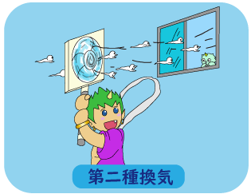
|
|
| 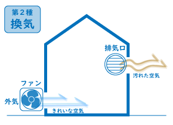 | 例えば、クリーンルームや、食品工場、手術室と言った居室は、室内の空気圧力を「正圧（プラス圧）」に保つ事で、外部（隣室等）からの空気侵入を遮断する事が可能になり、居室の空気汚染が防止出来ます。 しかし、給気フィルターの汚染度により、圧力変動が生じる為、常に適切な差圧制御（コントロール）が要求されます。 「第二種換気」は、一般居室でも採用出来ない事は無く、一定の外気量を取り入れ、別室の排気口から排出させれば、何等問題有りませんが、フィルターの目詰まりが生じると、当然圧力も低下するので、その辺りは小まめに清掃して頂ければ良いでしょう。 |
| 3）第一種換気 | |
| 「第一種換気」は、給気と排気の両方を機械（給排気ファン）を設けた、機械換気方式です。 |
|
| 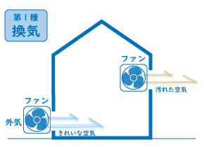 | 「第一種換気」の特徴は、給気ファンと排気ファンで構成され、室内の圧力を一定（±0）に保持出来る事で、扉の開閉等による影響は殆ど無く、常に安定した換気が可能になります。 とはいっても、給気フィルターの汚れ度が大きくなると、給気フィルターの圧損も大きくなり、給気ファンの風量が下がり気味になり、居室は負圧寄りに移行しますが、「第三種換気」で生じる扉付近の急激な変化は生じません。 給気ファンのコストはUPしますが、外気導入時のフィルターによる粉じん等の除去効果は、「第三種換気」と比較すると格段に違い、換気性能としては申し分ありません。 |
| この「第一種換気」は、給排気ファンだけでは無く、全熱交換機（ロスナイ）等といった製品にも、幅広く採用されています。 | |
| ④フィルターの効果 | |
 |
|
|
フィルターが汚れると目詰まりが生じ、外気が吸込まれるフィルターは抵抗が大きくなった分、排気用換気扇の持っている空気を排出する力が発揮されなくなり、換気能力が出なくなります。 |
|
| 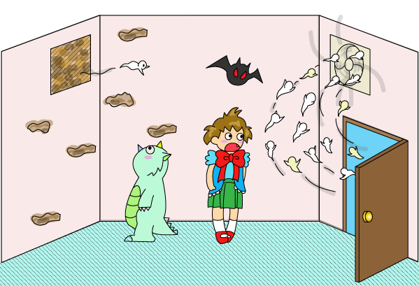 | |
|
ところが、扉を開けると開口面積が大きくなります。開口面積が大きい分だけフィルターよりも抵抗が少なく、そこから一気に外気の空気が吸い込まれ、換気扇から屋外へ一部の汚れた空気は排出されますが、給気口のフィルターからはほとんど外気が入らなくなり、フィルター周辺の汚れた空気はすぐに排出されません。 |
|
| 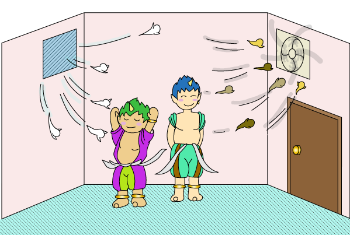 | |
|
汚れたフィルターを洗って汚れを落としたり、新品フィルターと入れ替えると、フィルターの抵抗が少なくなり、扉を閉めていると給気フィルター側から新鮮な屋外空気が吸込まれ、換気扇から屋外に汚れた空気が排出され、正しい換気が出来るという訳です。 |
| ⑤フィルターの種類 | ||||||||||||||||||
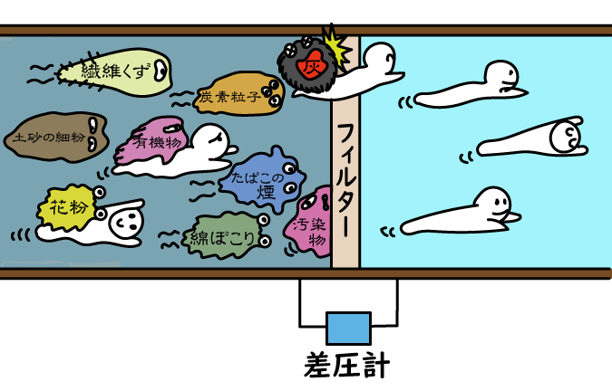
|
||||||||||||||||||


| ⑥フィルターのメンテナンス | ||
| ここでは、外気導入時のフィレドンフィルターについて説明します。 フィレドンフィルターは、無方向性の繊維集合体で、圧力損失が低くかつ集麈容量が大きく、 湿度の影響を受けない難燃性のエアフィルタなので、勿論洗浄による再生は十分可能です。 然し、掃除機で汚れを吸い取っても、内部に付着した汚れは全く取れませんので、ご注意ください。 洗浄の際には、強く擦らないでホースで洗い流す程度で、十分汚れは落とせます。 |
||
| 汚れたフィルター |
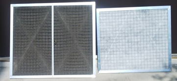 | 新品フィルター |
4.換気の制御
| ① 換気を制御する目的 | ||
換気制御を行う目的は、 ①室内の空気環境を適切な条件に維持させます。 ②連続換気時に生じる、外気導入時の外気負荷（屋外からの熱）を、換気制御により抑制します。 この様に、換気制御を介入させる事で、間接的に熱源エネルギーの消費量を抑え、CO2排出量も抑制する事が可能になります。 その前提条件として大切な事は、「適切な換気が行われている」という事です。 いくら「エネルギー削減」と言っても、もともと換気能力が満足されない状態で、換気を制御しても無意味な制御になり、逆に健康を害する要因にもなり兼ねません。 まずは、「適切な換気量が維持されている」事を前提に、換気制御の話を進めなければなりません。
「エアコン（冷暖房）と換気」この二つの設備は、『エアコン（冷暖房）や空調』は、室内の温湿度を維持する目的で稼働し、『換気』は室内の汚れた空気を排出すると同時に、屋外の新鮮な空気を取り入れる目的で稼働しています。 この様に説明すると、別段何事もなく当然に様に感じますが、実はこの『エアコン（冷暖房）や空調』と、『換気』は異なる目的で稼働し、特にエアコン稼働におけるエネルギー消費に、大きく影響を及ぼします。 お互い異なる目的で稼働している『換気』の部分を、室内の空気質に応じ制御を行い、室内環境を一定条件範囲で維持してあげれば、間違いなく省エネ性の向上にも繋がります。 しかし現状では、『エアコン（冷暖房）や空調』は、ある程度は機器本体で制御を行っていますが、『換気』に至っては、制御を活用していないケースの方が、多く存在しているのではないでしょうか。 その様な観点から、「換気が正しく機能している事」を前提として、「換気制御」を採用される事をお薦めします。 |
||
| ② 換気の制御 | ||||||||||||||||||||||||||||
|
||||||||||||||||||||||||||||
| つまり、『一定換気量の環境では、人員が少ない時に≪エネルギーの無駄使い≫が生じる』事になります。 こうした現象を防止するには、在室人員数に応じ『換気扇』のスイッチを『入り切』すれば簡単に出来る筈です。 しかし人員数を対象にすると、幾らの人数でスイッチを『入り切』させれば良いかは見出せませんし、現実には出来そうで出来な作業です。 そこで、『自動制御』という、便利な物を補足させれば、容易に解決します。 |
|
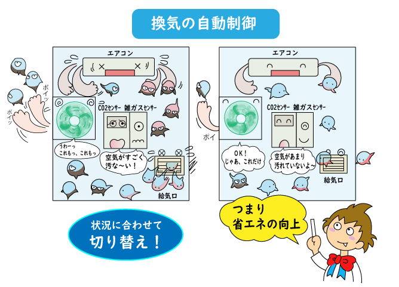 |
|
| 人を目的とした換気量は、基本的にCO2濃度が主体ですので、ここではCO2濃度だけを対象として考えると、建築物衛生法等では1,000ppm以下と定められています。 そこで、CO2センサー（CO2濃度を計測するセンサー）を利用して、仮に900ppm以下で『換気扇』を停止させ、1,000ppm以上で『換気扇』を運転すれば、在室人員が判らなくても『換気扇』を自動的に運転制御を行う事は、容易に果たせます。 更にCO2の変動と、室内外の温湿度を時系列で計測しておけば、情報としても管理出来ます。 この様に、人が出来ない事を『道具』を介すると容易に実現出来、人では『気付かないで、見過ごしている』要因を『自動制御という道具』を介する事で、『エネルギーを、無駄に消費させない設備』が実現出来ます。 |